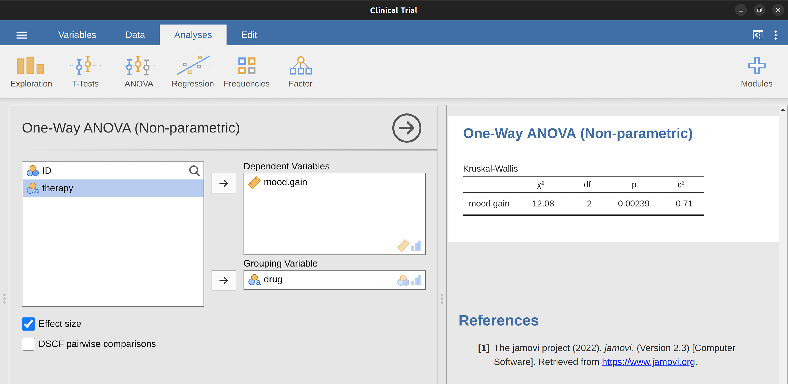
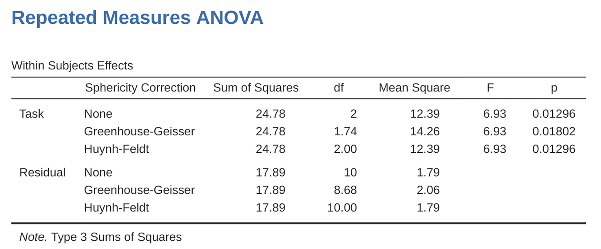
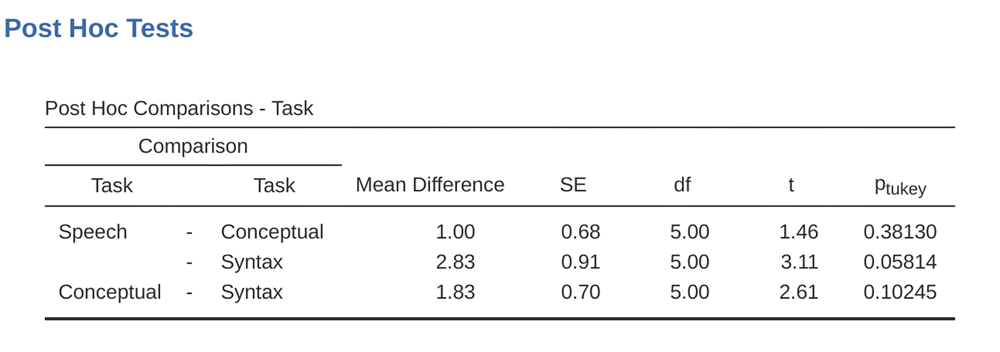
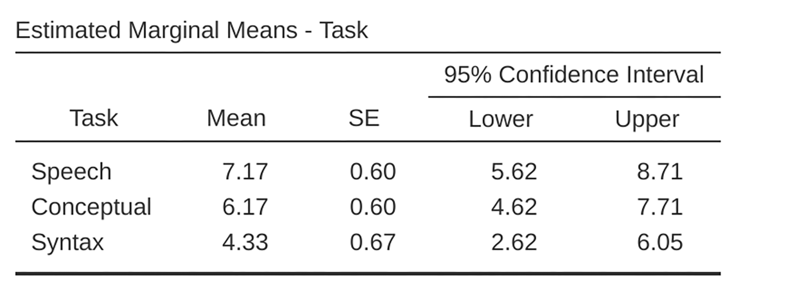
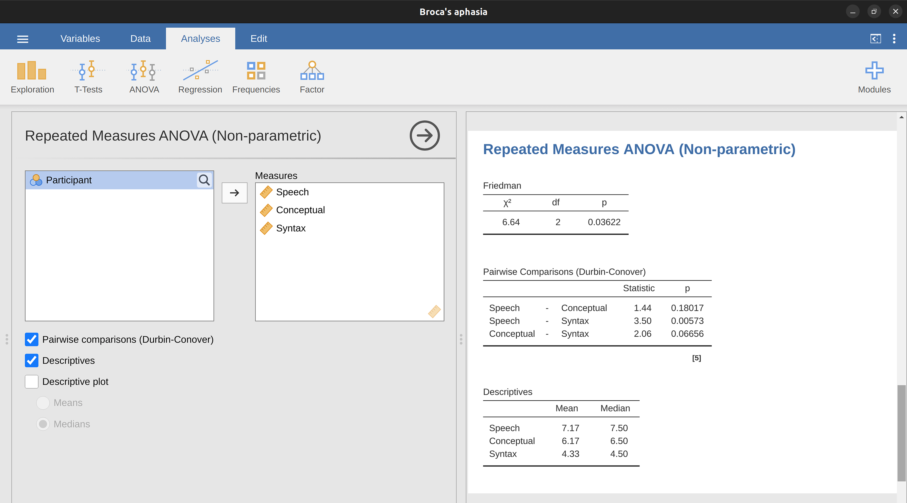

13 Comparing several means (one-way ANOVA)
This chapter introduces one of the most widely used tools in psychological statistics, known as “the analysis of variance”, but usually referred to as ANOVA. The basic technique was developed by Sir Ronald Fisher in the early 20th century and it is to him that we owe the rather unfortunate terminology. The term ANOVA is a little misleading, in two respects. Firstly, although the name of the technique refers to variances, ANOVA is concerned with investigating differences in means. Secondly, there are several different things out there that are all referred to as ANOVAs, some of which have only a very tenuous connection to one another. Later on in the book we’ll encounter a range of different ANOVA methods that apply in quite different situations, but for the purposes of this chapter we’ll only consider the simplest form of ANOVA, in which we have several different groups of observations, and we’re interested in finding out whether those groups differ in terms of some outcome variable of interest. This is the question that is addressed by a one-way ANOVA.
The structure of this chapter is as follows: first I’ll introduce a fictitious data set that we’ll use as a running example throughout the chapter. After introducing the data, I’ll describe the mechanics of how a one-way ANOVA actually works How ANOVA works and then focus on how you can run one in jamovi Running an ANOVA in jamovi. These two sections are the core of the chapter.
The remainder of the chapter discusses a range of important topics that inevitably arise when running an ANOVA, namely how to calculate effect sizes, post hoc tests and corrections for multiple comparisons and the assumptions that ANOVA relies upon. We’ll also talk about how to check those assumptions and some of the things you can do if the assumptions are violated. Then we’ll cover repeated measures ANOVA.
13.1 An illustrative data set
Suppose you’ve become involved in a clinical trial in which you are testing a new antidepressant drug called Joyzepam. In order to construct a fair test of the drug’s effectiveness, the study involves three separate drugs to be administered. One is a placebo, and the other is an existing antidepressant / anti-anxiety drug called Anxifree. A collection of 18 participants with moderate to severe depression are recruited for your initial testing. Because the drugs are sometimes administered in conjunction with psychological therapy, your study includes 9 people undergoing cognitive behavioural therapy (CBT) and 9 who are not. Participants are randomly assigned (doubly blinded, of course) a treatment, such that there are 3 CBT people and 3 no-therapy people assigned to each of the 3 drugs. A psychologist assesses the mood of each person after a 3-month run with each drug, and the overall improvement in each person’s mood is assessed on a scale ranging from \(-5\) to \(+5\). With that as the study design, let’s now load up the data file in clinicaltrial.csv . We can see that this data set contains the three variables drug, therapy and mood.gain.
For the purposes of this chapter, what we’re really interested in is the effect of drug on mood.gain. The first thing to do is calculate some descriptive statistics and draw some graphs. In the Chapter 4 chapter we showed you how to do this, and some of the descriptive statistics we can calculate in jamovi are shown in Figure 13.1. As the plot makes clear, there is a larger improvement in mood for participants in the Joyzepam group than for either the Anxifree group or the placebo group. The Anxifree group shows a larger mood gain than the control group, but the difference isn’t as large. The question that we want to answer is are these difference “real”, or are they just due to chance?
13.2 How ANOVA works
In order to answer the question posed by our clinical trial data we’re going to run a one-way ANOVA. I’m going to start by showing you how to do it the hard way, building the statistical tool from the ground up and showing you how you could do it if you didn’t have access to any of the cool built-in ANOVA functions in jamovi. And I hope you’ll read it carefully, try to do it the long way once or twice to make sure you really understand how ANOVA works.
The experimental design that I described in the previous section strongly suggests that we’re interested in comparing the average mood change for the three different drugs. In that sense, we’re talking about an analysis similar to the \(t\)-test (see Chapter 11) but involving more than two groups. If we let \(\mu_P\) denote the population mean for the mood change induced by the placebo, and let \(\mu_A\) and \(\mu_J\) denote the corresponding means for our two drugs, Anxifree and Joyzepam, then the (somewhat pessimistic) null hypothesis that we want to test is that all three population means are identical. That is, neither of the two drugs is any more effective than a placebo. We can write out this null hypothesis as:
\[H_0: \text{ it is true that } \mu_P=\mu_A=\mu_J\]
As a consequence, our alternative hypothesis is that at least one of the three different treatments is different from the others. It’s a bit tricky to write this mathematically, because (as we’ll discuss) there are quite a few different ways in which the null hypothesis can be false. So for now we’ll just write the alternative hypothesis like this:
\[H_1: \text{ it } \underline{ is \text{ } not } \text{ true that } \mu_P=\mu_A=\mu_J\]
This null hypothesis is a lot trickier to test than any of the ones we’ve seen previously. Given the title of this chapter, a sensible guess for how to test this would be to “do an ANOVA”, but it’s not particularly clear why “analysis of variances” will help us learn anything useful about the means. In fact, this is one of the biggest conceptual difficulties that people have when first encountering ANOVA. To see how this works, let’s start by talking about variances, specifically between group variability and within-group variability (Figure 13.2).
13.2.1 Two formulas for the variance of \(Y\)
First, let’s start by introducing some notation. We’ll use \(G\) to refer to the total number of groups. For our data set there are three drugs, so there are \(G = 3\) groups. Next, we’ll use \(N\) to refer to the total sample size; there are a total of \(N = 18\) people in our data set. Similarly, let’s use \(N_k\) to denote the number of people in the \(k\)-th group. In our fake clinical trial, the sample size is \(N_k = 6\) for all three groups.1 Finally, we’ll use \(Y\) to denote the outcome variable. In our case, \(Y\) refers to mood change. Specifically, we’ll use \(Y_{ik}\) to refer to the mood change experienced by the \(i\)-th member of the \(k\)-th group. Similarly, we’ll use \(\bar{Y}\) to be the average mood change, taken across all 18 people in the experiment, and \(\bar{Y}_k\) to refer to the average mood change experienced by the 6 people in group \(k\).
Now that we’ve got our notation sorted out we can start writing down formulas. To start with, let’s recall the formula for the variance that we used in Section 4.2, way back in those kinder days when we were just doing descriptive statistics. The sample variance of \(Y\) is defined as follows: \[Var(Y)=\frac{1}{N}\sum_{k=1}^{G}\sum_{i=1}^{N_k}(Y_{ik}-\bar{Y})^2\] This formula looks pretty much identical to the formula for the variance in Section 4.2. The only difference is that this time around I’ve got two summations here: I’m summing over groups (i.e., values for \(k\)) and over the people within the groups (i.e., values for \(i\)). This is purely a cosmetic detail. If I’d instead used the notation \(Y_p\) to refer to the value of the outcome variable for person \(p\) in the sample, then I’d only have a single summation. The only reason that we have a double summation here is that I’ve classified people into groups, and then assigned numbers to people within groups.
A concrete example might be useful here. Let’s consider Table 13.1, in which we have a total of \(N = 5\) people sorted into \(G = 2\) groups. Arbitrarily, let’s say that the “cool” people are group 1 and the “uncool” people are group 2. It turns out that we have three cool people (\(N_1 = 3\)) and two uncool people (\(N_2 = 2\)).
Notice that I’ve constructed two different labelling schemes here. We have a “person” variable \(p\) so it would be perfectly sensible to refer to \(Y_p\) as the grumpiness of the \(p\)-th person in the sample. For instance, the table shows that Tim is the fourth so we’d say \(p = 4\). So, when talking about the grumpiness \(Y\) of this “Tim” person, whoever he might be, we could refer to his grumpiness by saying that \(Y_p = 91\), for person \(p = 4\).
| name | person \(P\) | group | group num. \(k\) | index in group | grumpiness \( Y_{ik} \) or \( Y_p \) |
|---|---|---|---|---|---|
| Ann | 1 | cool | 1 | 1 | 20 |
| Ben | 2 | cool | 1 | 2 | 55 |
| Cat | 3 | cool | 1 | 3 | 21 |
| Tim | 4 | uncool | 2 | 1 | 91 |
| Egg | 5 | uncool | 2 | 2 | 22 |
However, that’s not the only way we could refer to Tim. As an alternative we could note that Tim belongs to the “uncool” group (\(k = 2\)), and is in fact the first person listed in the uncool group (\(i = 1\)). So it’s equally valid to refer to Tim’s grumpiness by saying that \(Y_{ik} = 91\), where \(k = 2\) and \(i = 1\). In other words, each person \(p\) corresponds to a unique \(ik\) combination, and so the formula that I gave above is actually identical to our original formula for the variance, which would be:
\[Var(Y)=\frac{1}{N}\sum_{p=1}^{N}(Y_p-\bar{Y})^2\]
In both formulas, all we’re doing is summing over all of the observations in the sample. Most of the time we would just use the simpler \(Y_p\) notation; the equation using \(Y_p\) is clearly the simpler of the two. However, when doing an ANOVA it’s important to keep track of which participants belong in which groups, and we need to use the \(Y_{ik}\) notation to do this.
13.2.2 From variances to sums of squares
Okay, now that we’ve got a good grasp on how the variance is calculated, let’s define something called the total sum of squares, which is denoted \(SStot\). This is very simple. Instead of averaging the squared deviations, which is what we do when calculating the variance, we just add them up.2
When we talk about analysing variances in the context of ANOVA, what we’re really doing is working with the total sums of squares rather than the actual variance.3
Next, we can define a third notion of variation which captures only the differences between groups. We do this by looking at the differences between the group means \(\bar{Y}_k\) and grand mean \(\bar{Y}\).4
It’s not too difficult to show that the total variation among people in the experiment \(SS_{tot}\) is actually the sum of the differences between the groups \(SS_b\) and the variation inside the groups \(SS_w\). That is:
\[SS_w+SS_b=SS_{tot}\]
Okay, so what have we found out? We’ve discovered that the total variability associated with the outcome variable (\(SS_{tot}\)) can be mathematically carved up into the sum of “the variation due to the differences in the sample means for the different groups” (\(SS_b\)) plus “all the rest of the variation” (\(SS_w\)).5
How does that help me find out whether the groups have different population means? Um. Wait. Hold on a second. Now that I think about it, this is exactly what we were looking for. If the null hypothesis is true then you’d expect all the sample means to be pretty similar to each other, right? And that would imply that you’d expect \(SS_b\) to be really small, or at least you’d expect it to be a lot smaller than “the variation associated with everything else”, \(SS_w\). Hmm. I detect a hypothesis test coming on.
13.2.3 From sums of squares to the \(F\)-test
As we saw in the last section, the qualitative idea behind ANOVA is to compare the two sums of squares values \(SS_b\) and \(SS_w\) to each other. If the between-group variation \(SS_b\) is large relative to the within-group variation \(SS_w\) then we have reason to suspect that the population means for the different groups aren’t identical to each other. In order to convert this into a workable hypothesis test, there’s a little bit of “fiddling around” needed. What I’ll do is first show you what we do to calculate our test statistic, the \(F\)-ratio, and then try to give you a feel for why we do it this way.
In order to convert our \(SS\) values into an \(F\)-ratio the first thing we need to calculate is the degrees of freedom associated with the \(SS_b\) and \(SS_w\) values. As usual, the degrees of freedom corresponds to the number of unique “data points” that contribute to a particular calculation, minus the number of “constraints” that they need to satisfy. For the within groups variability what we’re calculating is the variation of the individual observations (\(N\) data points) around the group means (\(G\) constraints). In contrast, for the between groups variability we’re interested in the variation of the group means (\(G\) data points) around the grand mean (1 constraint). Therefore, the degrees of freedom here are:
\[df_b=G-1\] \[df_w=N-G\]
Okay, that seems simple enough. What we do next is convert our summed squares value into a “mean squares” value, which we do by dividing by the degrees of freedom:
\[MS_b=\frac{SS_b}{df_b}\] \[MS_w=\frac{SS_w}{df_w}\]
Finally, we calculate the \(F\)-ratio by dividing the between groups \(MS\) by the within groups \(MS\):
\[F=\frac{MS_b}{MS_w}\]
At a very general level, the intuition behind the \(F\)-statistic is straightforward. Bigger values of \(F\) means that the between groups variation is large relative to the within groups variation. As a consequence, the larger the value of \(F\) the more evidence we have against the null hypothesis. But how large does \(F\) have to be in order to actually reject \(H_0\)? In order to understand this, you need a slightly deeper understanding of what ANOVA is and what the mean squares values actually are.
The next section discusses that in a bit of detail, but for readers that aren’t interested in the details of what the test is actually measuring I’ll cut to the chase. In order to complete our hypothesis test we need to know the sampling distribution for \(F\) if the null hypothesis is true. Not surprisingly, the sampling distribution for the \(F\)-statistic under the null hypothesis is an \(F\)-distribution. If you recall our discussion of the \(F\)-distribution in Chapter 7, the \(F\)-distribution has two parameters, corresponding to the two degrees of freedom involved. The first one \(df_1\) is the between groups degrees of freedom \(df_b\), and the second one \(df_2\) is the within groups degrees of freedom \(df_w\).
A summary of all the key quantities involved in a one-way ANOVA, including the formulas showing how they are calculated, is shown in Table 13.2.
| between groups | within groups | |
|---|---|---|
| \( df \) | \( df_b=G-1 \) | \( df_w=N-G \) |
| sum of squares | \( SS_b=\sum_{k=1}^{G} N_k (\bar{Y}_k-\bar{Y})^2 \) | \( SS_w=\sum_{k=1}^{G} \sum_{i=1}^{N_k} (Y_{ik}-\bar{Y}_k)^2 \) |
| mean squares | \( MS_b=\frac{SS_b}{df_b} \) | \( MS_w=\frac{SS_w}{df_w} \) |
| \( F \)-statistic | \( F=\frac{MS_b}{df_b} \) | - |
| \(p\)-value | [complicated] | - |
[Additional technical detail6]
13.2.4 A worked example
The previous discussion was fairly abstract and a little on the technical side, so I think that at this point it might be useful to see a worked example. For that, let’s go back to the clinical trial data that I introduced at the start of the chapter. The descriptive statistics that we calculated at the beginning tell us our group means: an average mood gain of \(0.45\) for the placebo, \(0.72\) for Anxifree, and \(1.48\) for Joyzepam. With that in mind, let’s party like it’s 18997 and start doing some pencil and paper calculations. I’ll only do this for the first \(5\) observations because it’s not bloody \(1899\) and I’m very lazy. Let’s start by calculating \(SS_w\), the within-group sums of squares. First, let’s draw up a nice table to help us with our calculations (Table 13.3).
| group \( k \) | outcome \( Y_{ik} \) |
|---|---|
| placebo | 0.5 |
| placebo | 0.3 |
| placebo | 0.1 |
| anxifree | 0.6 |
| anxifree | 0.4 |
At this stage, the only thing I’ve included in the table is the raw data itself. That is, the grouping variable (i.e., drug) and outcome variable (i.e. mood.gain) for each person. Note that the outcome variable here corresponds to the \(\bar{Y}_{ik}\) value in our equation previously. The next step in the calculation is to write down, for each person in the study, the corresponding group mean, \(\bar{Y}_k\). This is slightly repetitive but not particularly difficult since we already calculated those group means when doing our descriptive statistics, see Table 13.4.
| group \( k \) | outcome \( Y_{ik} \) | group mean \( \bar{Y}_k \) |
|---|---|---|
| placebo | 0.5 | 0.45 |
| placebo | 0.3 | 0.45 |
| placebo | 0.1 | 0.45 |
| anxifree | 0.6 | 0.72 |
| anxifree | 0.4 | 0.72 |
Now that we’ve written those down, we need to calculate, again for every person, the deviation from the corresponding group mean. That is, we want to subtract \(Y_{ik} - \bar{Y}_k\). After we’ve done that, we need to square everything. When we do that, here’s what we get (Table 13.5).
| group \( k \) | outcome \( Y_{ik} \) | group mean \( \bar{Y}_k \) | dev. from group mean \( Y_{ik} - \bar{Y}_k \) | squared deviation \( (Y_{ik}-\bar{Y}_k)^2 \) |
|---|---|---|---|---|
| placebo | 0.5 | 0.45 | 0.05 | 0.0025 |
| placebo | 0.3 | 0.45 | -0.15 | 0.0225 |
| placebo | 0.1 | 0.45 | -0.35 | 0.1225 |
| anxifree | 0.6 | 0.72 | -0.12 | 0.0136 |
| anxifree | 0.4 | 0.72 | -0.32 | 0.1003 |
The last step is equally straightforward. In order to calculate the within-group sum of squares we just add up the squared deviations across all observations:
\[ \begin{split} SS_w & = 0.0025 + 0.0225 + 0.1225 + 0.0136 + 0.1003 \\ & = 0.2614 \end{split} \]
Of course, if we actually wanted to get the right answer we’d need to do this for all 18 observations in the data set, not just the first five. We could continue with the pencil and paper calculations if we wanted to, but it’s pretty tedious. Alternatively, it’s not too hard to do this in a dedicated spreadsheet programme such as OpenOffice or Excel. Try and do it yourself. The one that I did, in Excel, is in the file clinicaltrial_anova.xls. When you do it you should end up with a within-group sum of squares value of \(1.39\).
Okay. Now that we’ve calculated the within groups variation, \(SS_w\), it’s time to turn our attention to the between-group sum of squares, \(SS_b\). The calculations for this case are very similar. The main difference is that instead of calculating the differences between an observation Yik and a group mean \(\bar{Y}_k\) for all of the observations, we calculate the differences between the group means \(\bar{Y}_k\) and the grand mean \(\bar{Y}\) (in this case \(0.88\)) for all of the groups (Table 13.6).
| group \( k \) | group mean \( \bar{Y}_k \) | grand mean \( \bar{Y} \) | deviation \( \bar{Y}_k - \bar{Y} \) | squared deviation \( ( \bar{Y}_k-\bar{Y})^2 \) |
|---|---|---|---|---|
| placebo | 0.45 | 0.88 | -0.43 | 0.19 |
| anxifree | 0.72 | 0.88 | -0.16 | 0.03 |
| joyzepam | 1.48 | 0.88 | 0.60 | 0.36 |
However, for the between group calculations we need to multiply each of these squared deviations by \(N_k\), the number of observations in the group. We do this because every observation in the group (all \(N_k\) of them) is associated with a between group difference. So if there are six people in the placebo group and the placebo group mean differs from the grand mean by \(0.19\), then the total between group variation associated with these six people is \(6 \times 0.19 = 1.14\). So we have to extend our little table of calculations (Table 13.7).
| group \( k \) | ... | squared deviations \( (\bar{Y}_k-\bar{Y})^2 \) | sample size \( N_k \) | weighted squared dev \( N_k (\bar{Y}_k-\bar{Y})^2 \) |
|---|---|---|---|---|
| placebo | ... | 0.19 | 6 | 1.14 |
| anxifree | ... | 0.03 | 6 | 0.18 |
| joyzepam | ... | 0.36 | 6 | 2.16 |
And so now our between group sum of squares is obtained by summing these “weighted squared deviations” over all three groups in the study:
\[\begin{aligned} SS_b & = 1.14 + 0.18 + 2.16 \\ &= 3.48 \end{aligned}\]
As you can see, the between group calculations are a lot shorter.8 Now that we’ve calculated our sums of squares values, \(SS_b\) and \(SS_w\), the rest of the ANOVA is pretty painless. The next step is to calculate the degrees of freedom. Since we have \(G = 3\) groups and \(N = 18\) observations in total our degrees of freedom can be calculated by simple subtraction:
\[ \begin{split} df_b & = G-1 = 2 \\ df_w & = N-G = 15 \end{split} \]
Next, since we’ve now calculated the values for the sums of squares and the degrees of freedom, for both the within groups variability and the between groups variability, we can obtain the mean square values by dividing one by the other:
\[ \begin{split} MS_b & = \frac{SS_b}{df_b} = \frac{3.48}{2} = 1.74 \\ MS_w & = \frac{SS_w}{df_w} = \frac{1.39}{15} = 0.09 \end{split} \]
We’re almost done. The mean square values can be used to calculate the \(F\)-value, which is the test statistic that we’re interested in. We do this by dividing the between groups \(MS\) value by the within groups \(MS\) value:
\[ \begin{split} F & = \frac{MS_b}{MS_w} = \frac{1.74}{0.09} \\ & = 19.3 \end{split} \]
Woohooo! Now that we have our test statistic, the last step is to find out whether the test itself gives us a significant result. As discussed in Chapter 9 what we’d do in the old days is open up a statistics textbook and in a huge lookup table we would find the threshold \(F\)-value corresponding to a particular value of alpha (the null hypothesis rejection region), e.g. \(0.05\), \(0.01\) or \(0.001\), for 2 and 15 degrees of freedom. Doing it this way would give us a threshold \(F\)-value for an alpha of \(0.001\) of \(11.34\). As this is less than our calculated \(F\)-value we say that \(p < 0.001\). But nowadays fancy stats software calculates the exact \(p\)-value for you, which is \(0.000071\). So, unless we’re being extremely conservative about our type I error rate, we’re pretty much guaranteed to reject the null hypothesis.
At this point, we’re basically done. Having completed our calculations, it’s traditional to organise all these numbers into an ANOVA table like the one in Table 13.1. For our clinical trial data, the ANOVA table would look like Table 13.8.
| \( df \) | sum of squares | mean squares | \(F\)-statistic | \(p\)-value | |
|---|---|---|---|---|---|
| between groups | 2 | 3.48 | 1.74 | 19.3 | 0.000071 |
| within groups | 15 | 1.39 | 0.09 | - | - |
These days, you’ll probably never have much reason to want to construct one of these tables yourself, but you will find that almost all statistical software (jamovi included) tends to organise the output of an ANOVA into a table like this, so it’s a good idea to get used to reading them. However, although the software will output a full ANOVA table, there’s almost never a good reason to include the whole table in your write up. A pretty standard way of reporting the stats block for this result would be to write something like this:
One-way ANOVA showed a significant effect of drug on mood gain (\(F(2,15) = 19.3, p < .001\)).
Sigh. So much work for one short sentence.
13.3 Running an ANOVA in jamovi
I’m pretty sure I know what you’re thinking after reading the last section, especially if you followed my advice and did all of that by pencil and paper (i.e., in a spreadsheet) yourself. Doing the ANOVA calculations yourself sucks. There’s quite a lot of calculations that we needed to do along the way, and it would be tedious to have to do this over and over again every time you wanted to do an ANOVA.
13.3.1 Using jamovi to specify your ANOVA
To make life easier for you, jamovi can do ANOVA…hurrah! Go to the ‘ANOVA’ – ‘ANOVA’ analysis, and move the mood.gain variable across so it is in the ‘Dependent Variable’ box, and then move the drug variable across so it is in the ‘Fixed Factors’ box. This should give the results as shown in Figure 13.3.9 Note I have also checked the \(\eta^2\) checkbox, pronounced “eta” squared, under the ‘Effect Size’ option and this is also shown on the results table. We will come back to effect sizes a bit later.
The jamovi results table shows you the sums of squares values, the degrees of freedom, and a couple of other quantities that we’re not really interested in right now. Notice, however, that jamovi doesn’t use the names “between group” and “within group”. Instead, it tries to assign more meaningful names. In our particular example, the between groups variance corresponds to the effect that the drug has on the outcome variable, and the within groups variance corresponds to the “leftover” variability so it calls that the residuals.

If we compare these numbers to the numbers that I calculated by hand in A worked example, you can see that they’re more or less the same, apart from rounding errors. The between groups sums of squares is \(SS_b = 3.45\), the within groups sums of squares is \(SS_w = 1.39\), and the degrees of freedom are \(2\) and \(15\) respectively. We also get the \(F\)-value and the \(p\)-value and, again, these are more or less the same, give or take rounding errors, to the numbers that we calculated ourselves when doing it the long and tedious way.
13.4 Effect size
There’s a few different ways you could measure the effect size in an ANOVA, but the most commonly used measures are \(\eta^2\) (eta squared) and partial \(\eta^2\). For a one-way analysis of variance they’re identical to each other, so for the moment I’ll just explain \(\eta^2\). The definition of \(\eta^2\) is actually really simple:
\[\eta^2=\frac{SS_b}{SS_{tot}}\]
That’s all it is. So when I look at the ANOVA table in Figure 13.3, I see that \(SS_b = 3.45\) and \(SS_tot = 3.45 + 1.39 = 4.84\). Thus we get an \(\eta^2\) value of:
\[\eta^2=\frac{3.45}{4.84}=0.71\]
The interpretation of \(\eta^2\) is equally straightforward. It refers to the proportion of the variability in the outcome variable (mood.gain) that can be explained in terms of the predictor (drug). A value of \(\eta^2=0\) means that there is no relationship at all between the two, whereas a value of \(\eta^2=1\) means that the relationship is perfect. Better yet, the \(\eta^2\) value is very closely related to \(R^2\), as discussed previously in Section 12.6.1, and has an equivalent interpretation. Although many statistics textbooks suggest \(\eta^2\) as the default effect size measure in ANOVA, there’s an interesting blog post10 by Daniel Lakens suggesting that eta-squared is perhaps not the best measure of effect size in real-world data analysis, because it can be a biased estimator. Usefully, there is also an option in jamovi to specify omega-squared (\(\omega^2\)), which is less biased, alongside eta-squared.
13.5 Multiple comparisons and post hoc tests
Any time you run an ANOVA with more than two groups and you end up with a significant effect, the first thing you’ll probably want to ask is which groups are actually different from one another. In our drugs example, our null hypothesis was that all three drugs (placebo, Anxifree and Joyzepam) have the exact same effect on mood. But if you think about it, the null hypothesis is actually claiming three different things all at once here. Specifically, it claims that:
- Your competitor’s drug (Anxifree) is no better than a placebo (i.e., \(\mu_A = \mu_P\))
- Your drug (Joyzepam) is no better than a placebo (i.e., \(\mu_J = \mu_P\))
- Anxifree and Joyzepam are equally effective (i.e., \(\mu_J = \mu_A\))
If any one of those three claims is false, then the null hypothesis is also false. So, now that we’ve rejected our null hypothesis, we’re thinking that at least one of those things isn’t true. But which ones? All three of these propositions are of interest. Since you certainly want to know if your new drug Joyzepam is better than a placebo, it would be nice to know how well it stacks up against an existing commercial alternative (i.e., Anxifree). It would even be useful to check the performance of Anxifree against the placebo. Even if Anxifree has already been extensively tested against placebos by other researchers, it can still be very useful to check that your study is producing similar results to earlier work.
When we characterise the null hypothesis in terms of these three distinct propositions, it becomes clear that there are eight possible “states of the world” that we need to distinguish between (Table 13.9).
| possibility: | is \( \mu_P = \mu_A \)? | is \( \mu_P = \mu_J \)? | is \( \mu_A = \mu_J \)? | which hypothesis? |
|---|---|---|---|---|
| 1 | \( \checkmark \) | \( \checkmark \) | \( \checkmark \) | null |
| 2 | \( \checkmark \) | \( \checkmark \) | alternative | |
| 3 | \( \checkmark \) | \( \checkmark \) | alternative | |
| 4 | \( \checkmark \) | alternative | ||
| 5 | \( \checkmark \) | \( \checkmark \) | \( \checkmark \) | alternative |
| 6 | \( \checkmark \) | alternative | ||
| 7 | \( \checkmark \) | alternative | ||
| 8 | alternative |
By rejecting the null hypothesis, we’ve decided that we don’t believe that #1 is the true state of the world. The next question to ask is, which of the other seven possibilities do we think is right? When faced with this situation, it’s usually helps to look at the data. For instance, if we look at the plots in Figure 13.1, it’s tempting to conclude that Joyzepam is better than the placebo and better than Anxifree, but there’s no real difference between Anxifree and the placebo. However, if we want to get a clearer answer about this, it might help to run some tests.
13.5.1 Running “pairwise” \(t\)-tests
How might we go about solving our problem? Given that we’ve got three separate pairs of means (placebo versus Anxifree, placebo versus Joyzepam, and Anxifree versus Joyzepam) to compare, what we could do is run three separate \(t\)-tests and see what happens. This is easy to do in jamovi. Go to the ANOVA ‘Post Hoc Tests’ options, move the ‘drug’ variable across into the active box on the right, and then click on the ‘No correction’ checkbox. This will produce a neat table showing all the pairwise \(t\)-test comparisons amongst the three levels of the drug variable, as in Figure 13.4.

13.5.2 Corrections for multiple testing
In the previous section I hinted that there’s a problem with just running lots and lots of \(t\)-tests. The concern is that, when running these analyses, what we’re doing is going on a “fishing expedition”. We’re running lots and lots of tests without much theoretical guidance in the hope that some of them come up significant. This kind of theory-free search for group differences is referred to as post hoc analysis (“post hoc” being Latin for “after this”).11
It’s okay to run post hoc analyses, but a lot of care is required. For instance, the analysis that I ran in the previous section should be avoided, as each individual \(t\)-test is designed to have a 5% type I error rate (i.e., \(\alpha = .05\)) and I ran three of these tests. Imagine what would have happened if my ANOVA involved 10 different groups, and I had decided to run 45 “post hoc” \(t\)-tests to try to find out which ones were significantly different from each other, you’d expect 2 or 3 of them to come up significant by chance alone. As we saw in Chapter 9, the central organising principle behind null hypothesis testing is that we seek to control our type I error rate, but now that I’m running lots of \(t\)-tests at once in order to determine the source of my ANOVA results, my actual type I error rate across this whole family of tests has gotten completely out of control.
The usual solution to this problem is to introduce an adjustment to the \(p\)-value, which aims to control the total error rate across the family of tests (see Shaffer (1995)). An adjustment of this form, which is usually (but not always) applied because one is doing post hoc analysis, is often referred to as a correction for multiple comparisons, though it is sometimes referred to as “simultaneous inference”. In any case, there are quite a few different ways of doing this adjustment. I’ll discuss a few of them in this section and in Section 14.8 in the next chapter, but you should be aware that there are many other methods out there (see, e.g., Hsu (1996)).
13.5.3 Bonferroni corrections
The simplest of these adjustments is called the Bonferroni correction (Dunn, 1961), and it’s very very simple indeed. Suppose that my post hoc analysis consists of \(m\) separate tests, and I want to ensure that the total probability of making any type I errors at all is at most \(\alpha\).12 If so, then the Bonferroni correction just says “multiply all your raw \(p\)-values by \(m\)”. If we let \(p\) denote the original \(p\)-value, and let \(p_j^{'}\) be the corrected value, then the Bonferroni correction tells that:
\[p_j^{'}=m \times p\]
And therefore, if you’re using the Bonferroni correction, you would reject the null hypothesis if \(p_j^{'} < \alpha\). The logic behind this correction is very straightforward. We’re doing m different tests, so if we arrange it so that each test has a type I error rate of at most \(\frac{\alpha}{m}\), then the total type I error rate across these tests cannot be larger than \(\alpha\). That’s pretty simple, so much so that in the original paper, the author writes:
The method given here is so simple and so general that I am sure it must have been used before this. I do not find it, however, so can only conclude that perhaps its very simplicity has kept statisticians from realizing that it is a very good method in some situations (Dunn (1961), pp. 52-53).
To use the Bonferroni correction in jamovi, just click on the ‘Bonferroni’ checkbox in the ‘Correction’ options, and you will see another column added to the ANOVA results table showing the adjusted \(p\)-values for the Bonferroni correction (Table 13.8). If we compare these three \(p\)-values to those for the uncorrected, pairwise \(t\)-tests, it is clear that the only thing that jamovi has done is multiply them by \(3\).
13.5.4 Holm corrections
Although the Bonferroni correction is the simplest adjustment out there, it’s not usually the best one to use. One method that is often used instead is the Holm correction (Holm, 1979). The idea behind the Holm correction is to pretend that you’re doing the tests sequentially, starting with the smallest (raw) \(p\)-value and moving onto the largest one. For the \(j\)-th largest of the \(p\)-values, the adjustment is either:
\[p_j^{'}=j \times p_j\]
(i.e., the biggest \(p\)-value remains unchanged, the second biggest \(p\)-value is doubled, the third biggest \(p\)-value is tripled, and so on), or:
\[p_j^{'}=p_{j+1}^{'}\]
whichever one is larger. This might sound a little confusing, so let’s go through it a little more slowly. Here’s what the Holm correction does. First, you sort all of your \(p\)-values in order, from smallest to largest. For the smallest \(p\)-value all you do is multiply it by \(m\), and you’re done. However, for all the other ones it’s a two-stage process. For instance, when you move to the second smallest \(p\)-value, you first multiply it by \(m - 1\). If this produces a number that is bigger than the adjusted \(p\)-value that you got last time, then you keep it. But if it’s smaller than the last one, then you copy the last \(p\)-value. To illustrate how this works, consider Table 13.10 which shows the calculations of a Holm correction for a collection of five \(p\)-values.
Hopefully that makes things clear.
Although it’s a little harder to calculate, the Holm correction has some very nice properties. It’s more powerful than Bonferroni (i.e., it has a lower type II error rate) but, counter-intuitive as it might seem, it has the same type I error rate. As a consequence, in practice there’s never any reason to use the simpler Bonferroni correction since it is always outperformed by the slightly more elaborate Holm correction. Because of this, the Holm correction should be your go to multiple comparison correction.
| raw \( p \) | rank \( j \) | \( p \times j \) | Holm \( p \) |
|---|---|---|---|
| .001 | 5 | .005 | .005 |
| .005 | 4 | .020 | .020 |
| .019 | 3 | .057 | .057 |
| .022 | 2 | .044 | .057 |
| .103 | 1 | .103 | .103 |
Figure 13.4 also shows the Holm corrected \(p\)-values and, as you can see, the biggest \(p\)-value (corresponding to the comparison between Anxifree and the placebo) is unaltered. At a value of .15, it is exactly the same as the value we got originally when we applied no correction at all. In contrast, the smallest \(p\)-value (Joyzepam versus placebo) has been multiplied by three.
13.5.5 Writing up the post hoc test
Finally, having run the post hoc analysis to determine which groups are significantly different to one another, you might write up the result like this:
Post hoc tests (using the Holm correction to adjust \(p\)) indicated that Joyzepam produced a significantly larger mood change than both Anxifree (\(p = .001\)) and the placebo (\((p = 9.0 \times{10^{-5}}\)). We found no evidence that Anxifree performed better than the placebo (\(p = .15\)).
Or, if you don’t like the idea of reporting exact \(p\)-values, then you’d change those numbers to \(p < .01\), \(p < .001\) and \(p > .05\) respectively. Either way, the key thing is that you indicate that you used Holm’s correction to adjust the \(p\)-values. And of course, I’m assuming that elsewhere in the write up you’ve included the relevant descriptive statistics (i.e., the group means and standard deviations), since these \(p\)-values on their own aren’t terribly informative.
13.6 The assumptions of one-way ANOVA
Like any statistical test, analysis of variance relies on some assumptions about the data, specifically the residuals. There are three key assumptions that you need to be aware of: normality, homogeneity of variance and independence.
[Additional technical detail13]
So, how do we check whether the assumption about the residuals is accurate? Well, as I indicated above, there are three distinct claims buried in this one statement, and we’ll consider them separately.
- Homogeneity of variance. Notice that we’ve only got the one value for the population standard deviation (i.e., \(\sigma\)), rather than allowing each group to have it’s own value (i.e., \(\sigma_k\)). This is referred to as the homogeneity of variance (sometimes called homoscedasticity) assumption. ANOVA assumes that the population standard deviation is the same for all groups. We’ll talk about this extensively in the Checking the homogeneity of variance assumption section.
- Normality. The residuals are assumed to be normally distributed. As we saw in Section 11.9, we can assess this by looking at QQ plots (or running a Shapiro-Wilk test. I’ll talk about this more in an ANOVA context in the Checking the normality assumption section.
- Independence. The independence assumption is a little trickier. What it basically means is that, knowing one residual tells you nothing about any other residual. All of the \(\epsilon_{ik}\) values are assumed to have been generated without any “regard for” or “relationship to” any of the other ones. There’s not an obvious or simple way to test for this, but there are some situations that are clear violations of this. For instance, if you have a repeated measures design, where each participant in your study appears in more than one condition, then independence doesn’t hold. There’s a special relationship between some observations, namely those that correspond to the same person! When that happens, you need to use something like a Repeated measures one-way ANOVA.
13.6.1 Checking the homogeneity of variance assumption
To make the preliminary test on variances is rather like putting to sea in a rowing boat to find out whether conditions are sufficiently calm for an ocean liner to leave port!
– George Box (Box, 1953)
There’s more than one way to skin a cat, as the saying goes, and more than one way to test the homogeneity of variance assumption, too (though for some reason no-one made a saying out of that). The most commonly used test for this that I’ve seen in the literature is the Levene test (Levene, 1960), and the closely related Brown-Forsythe test (Brown & Forsythe, 1974).
Regardless of whether you’re doing the standard Levene test or the Brown-Forsythe test, the test statistic, which is sometimes denoted \(F\) but also sometimes written as \(W\), is calculated in exactly the same way that the \(F\)-statistic for the regular ANOVA is calculated, just using a \(Z_{ik}\) rather than \(Y_{ik}\). With that in mind, we can go on to look at how to run the test in jamovi.
[Additional technical detail14]
13.6.2 Running the Levene test in jamovi
Okay, so how do we run the Levene test? Simple really – under the ANOVA ‘Assumption Checks’ option, just click on the ‘Homogeneity tests’ checkbox. If we look at the output, shown in Figure 13.5, we see that the test is non-significant (\(F_{2,15} = 1.45, p = .266\)), so it looks like the homogeneity of variance assumption is fine. However, looks can be deceptive! If your sample size is pretty big, then the Levene test could show up a significant effect (i.e. p < .05) even when the homogeneity of variance assumption is not violated to an extent which troubles the robustness of ANOVA. This was the point George Box was making in the quote above. Similarly, if your sample size is quite small, then the homogeneity of variance assumption might not be satisfied and yet a Levene test could be non-significant (i.e. p > .05). What this means is that, alongside any statistical test of the assumption being met, you should always plot the standard deviation around the means for each group / category in the analysis…just to see if they look fairly similar (i.e. homogeneity of variance) or not.

13.6.3 Removing the homogeneity of variance assumption
In our example, the homogeneity of variance assumption turned out to be a pretty safe one: the Levene test came back non-significant (notwithstanding that we should also look at the plot of standard deviations), so we probably don’t need to worry. However, in real life we aren’t always that lucky. How do we save our ANOVA when the homogeneity of variance assumption is violated? If you recall from our discussion of \(t\)-tests, we’ve seen this problem before. The Student \(t\)-test assumes equal variances, so the solution was to use the Welch \(t\)-test, which does not. In fact, Welch (1951) also showed how we can solve this problem for ANOVA too (the Welch one-way test). It’s implemented in jamovi using the One-Way ANOVA analysis. This is a specific analysis approach just for one-way ANOVA, and to run the Welch one-way ANOVA for our example, we would re-run the analysis as previously, but this time use the jamovi ANOVA - one-way ANOVA analysis command, and check the option for Welch’s test (see Figure 13.6). To understand what’s happening here, let’s compare these numbers to what we got earlier when Running an ANOVA in jamovi originally. To save you the trouble of flicking back, this is what we got last time: \(F(2, 15) = 18.611, p = .00009\), also shown as the Fisher’s test in the One-Way ANOVA shown in Figure 13.6.
Okay, so originally our ANOVA gave us the result \(F(2, 15) = 18.6\), whereas the Welch one-way test gave us \(F(2, 9.49) = 26.32\). In other words, the Welch test has reduced the within groups degrees of freedom from 15 to 9.49, and the \(F\)-value has increased from 18.6 to 26.32.
13.6.4 Checking the normality assumption
Testing the normality assumption is relatively straightforward. We covered most of what you need to know in Section 11.9. The only thing we really need to do is draw a QQ plot and, in addition if it is available, run the Shapiro-Wilk test. The QQ plot is shown in Figure 13.7 and it looks pretty normal to me.
If the Shapiro-Wilk test is not significant (i.e. \(p > .05\)) then this indicates that the assumption of normality is not violated. However, as with Levene’s test, if the sample size is large then a significant Shapiro-Wilk test may in fact be a false positive, where the assumption of normality is not violated in any substantive problematic sense for the analysis. And, similarly, a very small sample can produce false negatives. That’s why a visual inspection of the QQ plot is important.
Alongside inspecting the QQ plot for any deviations from normality, the Shapiro-Wilk test for our data does show a non-significant effect, with \(p\) = 0.6053 (see Figure 13.6). This therefore supports the QQ plot assessment; both checks find no indication that normality is violated.
13.6.5 Removing the normality assumption
Now that we’ve seen how to check for normality, we are led naturally to ask what we can do to address violations of normality. In the context of a one-way ANOVA, the easiest solution is probably to switch to a non-parametric test (i.e., one that doesn’t rely on any particular assumption about the kind of distribution involved). We’ve seen non-parametric tests before, in Chapter 11. When you only have two groups, the Mann-Whitney or the Wilcoxon test provides the non-parametric alternative that you need. When you’ve got three or more groups, you can use the Kruskal-Wallis rank sum test (Kruskal & Wallis, 1952). So that’s the test we’ll talk about next.
13.6.6 The logic behind the Kruskal-Wallis test
The Kruskal-Wallis test is surprisingly similar to ANOVA, in some ways. In ANOVA we started with \(Y_{ik}\), the value of the outcome variable for the ith person in the kth group. For the Kruskal-Wallis test what we’ll do is rank order all of these \(Y_{ik}\) values and conduct our analysis on the ranked data.15
13.6.7 Additional details
The description in the previous section illustrates the logic behind the Kruskal-Wallis test. At a conceptual level, this is the right way to think about how the test works.16
But wait, there’s more! Dear lord, why is there always more? The story I’ve told so far is only actually true when there are no ties in the raw data. That is, if there are no two observations that have exactly the same value. If there are ties, then we have to introduce a correction factor to these calculations. At this point I’m assuming that even the most diligent reader has stopped caring (or at least formed the opinion that the tie-correction factor is something that doesn’t require their immediate attention). So I’ll very quickly tell you how it’s calculated, and omit the tedious details about why it’s done this way. Suppose we construct a frequency table for the raw data, and let fj be the number of observations that have the j-th unique value. This might sound a bit abstract, so here’s a concrete example from the frequency table of mood.gain from the clinicaltrials.csv data set (Table 13.11).
| 0.1 | 0.2 | 0.3 | 0.4 | 0.5 | 0.6 | 0.8 | 0.9 | 1.1 | 1.2 | 1.3 | 1.4 | 1.7 | 1.8 |
|---|---|---|---|---|---|---|---|---|---|---|---|---|---|
| 1 | 1 | 2 | 1 | 1 | 2 | 1 | 1 | 1 | 1 | 2 | 2 | 1 | 1 |
Looking at this table, notice that the third entry in the frequency table has a value of 2. Since this corresponds to a mood.gain of 0.3, this table is telling us that two people’s mood increased by 0.3.17
And so jamovi uses a tie-correction factor to calculate the tie-corrected Kruskall-Wallis statistic. And at long last, we’re actually finished with the theory of the Kruskal-Wallis test. I’m sure you’re all terribly relieved that I’ve cured you of the existential anxiety that naturally arises when you realise that you don’t know how to calculate the tie-correction factor for the Kruskal-Wallis test. Right?
13.6.8 How to run the Kruskal-Wallis test in jamovi
Despite the horror that we’ve gone through in trying to understand what the Kruskal-Wallis test actually does, it turns out that running the test is pretty painless, since jamovi has an analysis as part of the ANOVA analysis set called ‘Non-Parametric’ – ‘one-way ANOVA (Kruskal-Wallis)’ Most of the time you’ll have data like the clinicaltrial.csv data set, in which you have your outcome variable mood.gain and a grouping variable drug. If so, you can just go ahead and run the analysis in jamovi. What this gives us is a Kruskal-Wallis \(\chi^2 =12.076, df = 2, p = 0.00239\), as in Figure 13.8.

13.7 Repeated measures one-way ANOVA
The one-way repeated measures ANOVA is a statistical test for significant differences between three or more groups where the same participants are in each group (or each participant is closely matched with participants in other experimental groups). For this reason, there should always be an equal number of scores (data points) in each experimental group. This type of design and analysis can also be called a “related ANOVA” or a “within subjects ANOVA”.
The logic behind a repeated measures ANOVA is very similar to that of an independent ANOVA (sometimes called a “between subjects” ANOVA). You’ll remember that earlier we showed that in a between subjects ANOVA total variability is partitioned into between groups variability (\(SS_b\)) and within groups variability (\(SS_w\)), then divided by the respective degrees of freedom to give \(MS_b\) and \(MS_w\) (see Table 13.1), whereupon the \(F\)-ratio is calculated as:
\[F=\frac{MS_b}{MS_w}\]
In a repeated measures ANOVA, the \(F\)-ratio is calculated in a similar way, but whereas in an independent ANOVA the within-group variability (\(SS_w\)) is used as the basis for the \(MS_w\) denominator, in a repeated measures ANOVA the \(SS_w\) is partioned into two parts. As we are using the same subjects in each group, we can remove the variability due to the individual differences between subjects (referred to as \(SS_{subjects}\)) from the within groups variability.
We won’t go into too much technical detail about how this is done, but essentially each subject becomes a level of a factor called subjects. The variability in this within subjects factor is then calculated in the same way as any between subjects factor. And then we can subtract \(SS_{subjects}\) from \(SS_w\) to provide a smaller \(SS_{error}\) term:
\[\text{Independent ANOVA: } SS_{error} = SS_w\] \[\text{Repeated Measures ANOVA: } SS_{error} = SS_w - SS_{subjects}\]
This change in \(SS_{error}\) term often leads to a more powerful statistical test, but this does depend on whether the reduction in the \(SS_{error}\) more than compensates for the reduction in degrees of freedom for the error term (as degrees of freedom go from \((n - k)\)18 to \((n - 1)(k - 1)\) (remembering that there are more subjects in the independent ANOVA design).
13.7.1 Repeated measures ANOVA in jamovi
First, we need some data. Geschwind (1972) has suggested that the exact nature of a patient’s language deficit following a stroke can be used to diagnose the specific region of the brain that has been damaged. A researcher is concerned with identifying the specific communication difficulties experienced by six patients suffering from Broca’s Aphasia (a language deficit commonly experienced following a stroke) (Table 13.12).
| Participant | Speech | Conceptual | Syntax |
|---|---|---|---|
| 1 | 8 | 7 | 6 |
| 2 | 7 | 8 | 6 |
| 3 | 9 | 5 | 3 |
| 4 | 5 | 4 | 5 |
| 5 | 6 | 6 | 2 |
| 6 | 8 | 7 | 4 |
The patients were required to complete three word recognition tasks. On the first (speech production) task, patients were required to repeat single words read out aloud by the researcher. On the second (conceptual) task, designed to test word comprehension, patients were required to match a series of pictures with their correct name. On the third (syntax) task, designed to test knowledge of correct word order, patients were asked to reorder syntactically incorrect sentences. Each patient completed all three tasks. The order in which patients attempted the tasks was counterbalanced between participants. Each task consisted of a series of 10 attempts. The number of attempts successfully completed by each patient are shown in Table 13.11. Enter these data into jamovi ready for analysis (or take a short-cut and load up the broca.csv file).
To perform a one-way related ANOVA in jamovi, open the one-way repeated measures ANOVA dialogue box, as in Figure 13.9, via ‘ANOVA - Repeated Measures ANOVA’.
Then:
- Enter a ‘Repeated Measures’ factor name. This should be a label that you choose to describe the conditions repeated by all participants. For example, to describe the speech, conceptual and syntax tasks completed by all participants a suitable label would be ‘Task’. Note that this new factor name represents the independent variable in the analysis.
- Add a third level in the ‘Repeated Measures Factors’ text box, as there are three levels representing the three tasks: speech, conceptual and syntax. Change the labels of the levels accordingly.
- Then move each of the levels variables across to the ‘Repeated Measures’ Cells text box.
- Finally, under the ‘Assumption Checks’ option, tick the ‘Sphericity checks’ text box.
jamovi output for a one-way repeated measures ANOVA is produced as shown in Figure 13.10 to Figure 13.13. The first output we should look at is Mauchly’s Test of Sphericity, which tests the hypothesis that the variances of the differences between the conditions are equal (meaning that the spread of difference scores between the study conditions is approximately the same). In Figure 13.10 the significance level in Mauchly’s test is \(p = .720\). If Mauchly’s test is non-significant (i.e. \(p > .05\), as is the case in this analysis) then it is reasonable to conclude that the variances of the differences are not significantly different (i.e. they are roughly equal and sphericity can be assumed).
If, on the other hand, Mauchly’s test had been significant (\(p\) < .05) then we would conclude that there are significant differences between the variance of the differences, and the requirement of sphericity has not been met. In this case, we should apply a correction to the \(F\)-value obtained in the one-way related ANOVA analysis:
- If the Greenhouse-Geisser value in the ‘Tests of Sphericity’ table is > .75 then you should use the Huynh-Feldt correction
- But if the Greenhouse-Geisser value is < .75, then you should use the Greenhouse-Geisser correction.
Both these corrected \(F\)-values can be specified in the ‘Sphericity Corrections’ check boxes under the ‘Assumption Checks’ options, and the corrected \(F\)-values are then shown in the results table, as in Figure 13.11.
In our analysis, we saw that the significance of Mauchly’s Test of Sphericity was \(p = .720\) (i.e., \(p > 0.05)\). So, this means we can assume that the requirement of sphericity has been met so no correction to the \(F\)-value is needed. Therefore, we can use the ‘None’ Sphericity Correction output values for the repeated measure ‘Task’: \(F = 6.93\), \(df = 2\), \(p = .013\), and we can conclude that the number of tests successfully completed on each language task did vary significantly depending on whether the task was speech, comprehension or syntax based (\(F(2, 10) = 6.93\), \(p = .013\)).

Post hoc tests can also be specified in jamovi for repeated measures ANOVA in the same way as for independent ANOVA. The results are shown in Figure 13.12. These indicate that there is a significant difference between Speech and Syntax, but not between other levels.

Descriptive statistics (marginal means) can be reviewed to help interpret the results, produced in the jamovi output as in Figure 13.13. Comparison of the mean number of trials successfully completed by participants shows that Broca’s Aphasics perform reasonably well on speech production (mean = 7.17) and language comprehension (mean = 6.17) tasks. However, their performance was considerably worse on the syntax task (mean = 4.33), with a significant difference in post hoc tests between Speech and Syntax task performance.

13.8 The Friedman non-parametric repeated measures ANOVA test
The Friedman test is a non-parametric version of a repeated measures ANOVA and can be used instead of the Kruskal-Wallis test when testing for differences between three or more groups where the same participants are in each group, or each participant is closely matched with participants in other conditions. If the dependent variable is ordinal, or if the assumption of normality is not met, then the Friedman test can be used.
As with the Kruskal-Wallis test, the underlying mathematics is complicated, and won’t be presented here. For the purpose of this book, it is sufficient to note that jamovi calculates the tie-corrected version of the Friedman test, and in Figure 13.14 there is an example using the Broca’s Aphasia data we have already looked at.

It’s pretty straightforward to run a Friedman test in jamovi. Just select ‘Analyses - ANOVA - Repeated Measures ANOVA (Non-parametric)’ as in Figure 13.14. Then highlight and transfer the names of the repeated measures variables you wish to compare (Speech, Conceptual, Syntax) into the ‘Measures:’ text box. To produce descriptive statistics (means and medians) for the three repeated measures variables, click on the ‘Descriptives’ button.
The jamovi results show descriptive statistics, chi-square value, degrees of freedom, and the \(p\)-value (Figure 13.14). Since the \(p\)-value is less than the level conventionally used to determine significance (\(p < .05\)), we can conclude that Broca’s Aphasics perform reasonably well on speech production (median = 7.5) and language comprehension (median = 6.5) tasks. However, their performance was considerably worse on the syntax task (median = 4.5), with a significant difference in post hoc tests between Speech and Syntax task performance.
13.9 On the relationship between ANOVA and the Student \(t\)-test
There’s one last thing I want to point out before finishing. It’s something that a lot of people find kind of surprising, but it’s worth knowing about. An ANOVA with two groups is identical to the Student \(t\)-test. No, really. It’s not just that they are similar, but they are actually equivalent in every meaningful way. I won’t try to prove that this is always true, but I will show you a single concrete demonstration. Suppose that, instead of running an ANOVA on our mood.gain ~ drug model, let’s instead do it using therapy as the predictor. If we run this ANOVA we get an \(F\)-statistic of \(F(1,16) = 1.71\), and a \(p\)-value = \(0.21\). Since we only have two groups, I didn’t actually need to resort to an ANOVA, I could have just decided to run a Student \(t\)-test. So let’s see what happens when I do that: I get a \(t\)-statistic of \(t(16) = -1.3068\) and a \(p\)-value = 0.21. Curiously, the \(p\)-values are identical. Once again we obtain a value of \(p = .21\). But what about the test statistic? Having run a \(t\)-test instead of an ANOVA, we get a somewhat different answer, namely \(t(16) = -1.3068\). However, there is a fairly straightforward relationship here. If we square the \(t\)-statistic then we get the \(F\)-statistic from before: \(-1.3068^2 = 1.7077\).
13.10 Summary
There’s a fair bit covered in this chapter, but there’s still a lot missing.19 Most obviously, I haven’t discussed how to run an ANOVA when you are interested in more than one grouping variable, but that will be discussed in a lot of detail in Chapter 14. In terms of what we have discussed, the key topics were:
- The basic logic behind How ANOVA works and Running an ANOVA in jamovi.
- How to compute an Effect size for an ANOVA.
- Multiple comparisons and post hoc tests for multiple testing.
- The assumptions of one-way ANOVA.
- Checking the homogeneity of variance assumption and what to do if it is violated: Removing the homogeneity of variance assumption.
- Checking the normality assumption and what to do if it is violated: Removing the normality assumption.
- Repeated measures one-way ANOVA and the non-parametric equivalent, The Friedman non-parametric repeated measures ANOVA test.
When all groups have the same number of observations, the experimental design is said to be “balanced”. Balance isn’t such a big deal for one-way ANOVA, which is the topic of this chapter. It becomes more important when you start doing more complicated ANOVAs.↩︎
So the formula for the total sum of squares is almost identical to the formula for the variance: \[SS_{tot}=\sum_{k=1}^{G} \sum_{i=1}^{N_k} (Y_{ik} - \bar{Y})^2\]↩︎
One very nice thing about the total sum of squares is that we can break it up into two different kinds of variation First, we can talk about the within-group sum of squares, in which we look to see how different each individual person is from their own group mean: \[SS_{w}= \sum_{k=1}^{G} \sum_{i=1}^{N_k} (Y_{ik} - \bar{Y}_k)^2\] where \(\bar{Y}_k\) is a group mean. In our example, \(\bar{Y}_k\) would be the average mood change experienced by those people given the k-th drug. So, instead of comparing individuals to the average of all people in the experiment, we’re only comparing them to those people in the the same group. As a consequence, you’d expect the value of \(SS_w\) to be smaller than the total sum of squares, because it’s completely ignoring any group differences, i.e., whether the drugs will have different effects on people’s moods.↩︎
In order to quantify the extent of this variation, what we do is calculate the between-group sum of squares: \[\begin{aligned} SS_{b} &= \sum_{k=1}^{G} \sum_{i=1}^{N_k} ( \bar{Y}_{k} - \bar{Y} )^2 \\ &= \sum_{k=1}^{G} N_k ( \bar{Y}_{k} - \bar{Y} )^2 \end{aligned}\]↩︎
\(SS_w\) is also referred to in an independent ANOVA as the error variance, or \(SS_{error}\).↩︎
At a fundamental level ANOVA is a competition between two different statistical models, \(H_0\) and \(H_1\). When I described the null and alternative hypotheses at the start of the section, I was a little imprecise about what these models actually are. I’ll remedy that now, though you probably won’t like me for doing so. If you recall, our null hypothesis was that all of the group means are identical to one another. If so, then a natural way to think about the outcome variable \(Y_{ik}\) is to describe individual scores in terms of a single population mean \(\mu\), plus the deviation from that population mean. This deviation is usually denoted \(\epsilon_{ik}\) and is traditionally called the error or residual associated with that observation. Be careful though. Just like we saw with the word “significant”, the word “error” has a technical meaning in statistics that isn’t quite the same as its everyday English definition. In everyday language, “error” implies a mistake of some kind, but in statistics it doesn’t (or at least, not necessarily). With that in mind, the word “residual” is a better term than the word “error”. In statistics both words mean “leftover variability”, that is “stuff” that the model can’t explain. In any case, here’s what the null hypothesis looks like when we write it as a statistical model: \[Y_{ik}=\mu+\epsilon_{ik}\] where we make the assumption (discussed later) that the residual values \(\epsilon_{ik}\) are normally distributed, with mean \(0\) and a standard deviation \(\sigma\) that is the same for all groups. To use the notation that we introduced in the [Introduction to probability] we would write this assumption like this: \[\epsilon_{ik} \sim Normal(0,\sigma^2)\] What about the alternative hypothesis, \(H_1\)? The only difference between the null hypothesis and the alternative hypothesis is that we allow each group to have a different population mean. So, if we let \(\mu_k\) denote the population mean for the k-th group in our experiment, then the statistical model corresponding to \(H_1\) is: \[Y_{ik}=\mu_k+\epsilon_{ik}\] where, once again, we assume that the error terms are normally distributed with mean 0 and standard deviation \(\sigma\). That is, the alternative hypothesis also assumes that \(\epsilon \sim Normal(0,\sigma^2)\) Okay, now that we’ve described the statistical models underpinning \(H_0\) and \(H_1\) in more detail, it’s now pretty straightforward to say what the mean square values are measuring, and what this means for the interpretation of \(F\). I won’t bore you with the proof of this but it turns out that the within-groups mean square, \(MS_w\), can be viewed as an estimator of the error variance \(\sigma^2\) . The between-groups mean square \(MS_b\) is also an estimator, but what it estimates is the error variance plus a quantity that depends on the true differences among the group means. If we call this quantity \(Q\), then we can see that the \(F\) statistic is basically:\(^a\) \[F=\frac{\hat{Q}+\hat{\sigma}^2}{\hat{\sigma}^2}\] where the true value \(Q = 0\) if the null hypothesis is true, and \(Q < 0\) if the alternative hypothesis is true (e.g., Hays (1994), ch. 10). Therefore, at a bare minimum the \(F\) value must be larger than 1 to have any chance of rejecting the null hypothesis. Note that this doesn’t mean that it’s impossible to get an \(F\)-value less than 1. What it means is that if the null hypothesis is true the sampling distribution of the \(F\)-ratio has a mean of 1,\(^b\) and so we need to see \(F\)-values larger than 1 in order to safely reject the null. To be a bit more precise about the sampling distribution, notice that if the null hypothesis is true, both \(MS_b\) and \(MS_w\) are estimators of the variance of the residuals \(\epsilon_{ik}\). If those residuals are normally distributed, then you might suspect that the estimate of the variance of \(\epsilon_{ik}\) is chi-square distributed, because (as discussed in the Section 7.6) that’s what a chi-square distribution is: it’s what you get when you square a bunch of normally-distributed things and add them up. And since the \(F\) distribution is (again, by definition) what you get when you take the ratio between two things that are \(\chi^2\) distributed, we have our sampling distribution. Obviously, I’m glossing over a whole lot of stuff when I say this, but in broad terms, this really is where our sampling distribution comes from.
—
\(^a\)If you read ahead to Chapter 14 and look at how the “treatment effect” at level \(k\) of a factor is defined in terms of the \(\alpha_k\) values (see [Factorial ANOVA 2: balanced designs, interactions allowed]), it turns out that \(Q\) refers to a weighted mean of the squared treatment effects, \(Q = \frac{(\sum_{k=1}^{G}N_k \alpha_k^2)}{(G-1)}\).
—
\(^b\)Or, if we want to be sticklers for accuracy, \(1+ \frac{2}{df_2-2}\).↩︎Or, to be precise, party like “it’s 1899 and we’ve got no friends and nothing better to do with our time than do some calculations that wouldn’t have made any sense in 1899 because ANOVA didn’t exist until about the 1920s”.↩︎
In the Excel clinicaltrial-anova.xls the value for \(SS_b\) worked out to be very slightly different, \(3.45\), than that shown in the text above (rounding errors!).↩︎
The jamovi results are more accurate than the ones in the text above, due to rounding errors.↩︎
https://daniellakens.blogspot.com/2015/06/why-you-should-use-omega-squared.html↩︎
If you do have some theoretical basis for wanting to investigate some comparisons but not others, it’s a different story. In those circumstances you’re not really running “post hoc” analyses at all, you’re making “planned comparisons”. I do talk about this situation later in the book - Section 14.9, but for now I want to keep things simple.↩︎
It’s worth noting in passing that not all adjustment methods try to do this. What I’ve described here is an approach for controlling “family wise type I error rate”. However, there are other post hoc tests that seek to control the “false discovery rate”, which is a somewhat different thing.↩︎
If you remember back to A worked example, which I hope you at least skimmed even if you didn’t read the whole thing, I described the statistical models underpinning ANOVA in this way: \[H_0:Y_{ik}=\mu + \epsilon_{ik}\] \[H_1:Y_{ik}=\mu_k + \epsilon_{ik}\] In these equations \(\mu\) refers to a single grand population mean which is the same for all groups, and \(\mu\)k is the population mean for the k-th group. Up to this point we’ve been mostly interested in whether our data are best described in terms of a single grand mean (the null hypothesis) or in terms of different group-specific means (the alternative hypothesis). This makes sense, of course, as that’s actually the important research question! However, all of our testing procedures have, implicitly, relied on a specific assumption about the residuals, \(\epsilon\_{ik}\), namely that: \[\epsilon_{ik} \sim Normal(0,\sigma^2)\] None of the maths works properly without this bit. Or, to be precise, you can still do all the calculations and you’ll end up with an \(F\)-statistic, but you have no guarantee that this \(F\)-statistic actually measures what you think it’s measuring, and so any conclusions that you might draw on the basis of the \(F\)-test might be wrong.↩︎
The Levene test is shockingly simple. Suppose we have our outcome variable \(Y_{ik}\). All we do is define a new variable, which I’ll call \(Z_{ik}\), corresponding to the absolute deviation from the group mean: \[Z_{ik}=Y_{ik}-\bar{Y}_{k}\] Okay, what good does this do us? Well, let’s take a moment to think about what \(Z_{ik}\) actually is and what we’re trying to test. The value of \(Z_{ik}\) is a measure of how the \(i\)-th observation in the \(k\)-th group deviates from its group mean. And our null hypothesis is that all groups have the same variance, i.e., the same overall deviations from the group means! So the null hypothesis in a Levene test is that the population means of \(Z\) are identical for all groups. Hmm. So what we need now is a statistical test of the null hypothesis that all group means are identical. Where have we seen that before? Oh right, that’s what ANOVA is, and so all that the Levene test does is run an ANOVA on the new variable \(Z_{ik}\). What about the Brown-Forsythe test? Does that do anything particularly different? Nope. The only change from the Levene test is that it constructs the transformed variable \(Z\) in a slightly different way, using deviations from the group medians rather than deviations from the group means. That is, for the Brown-Forsythe test: \[Z_{ik}=Y_{ik}-median_k(Y)\] where \(median_k(Y)\) is the median for group \(k\).↩︎
So let’s let \(R\_{ik}\) refer to the ranking given to the \(i\)th member of the \(k\)th group. Now, let’s calculate \(\bar{R}_k\), the average rank given to observations in the \(k\)th group: \[\bar{R}_k=\frac{1}{N_k}\sum_i R_{ik}\] and let’s also calculate \(\bar{R}\), the grand mean rank: \[\bar{R}=\frac{1}{N}\sum_i\sum_k R_{ik}\] Now that we’ve done this, we can calculate the squared deviations from the grand mean rank \(\bar{R}\). When we do this for the individual scores, i.e., if we calculate \((R_{ik} - \bar{R})^2\) , what we have is a “nonparametric” measure of how far the \(ik\)-th observation deviates from the grand mean rank. When we calculate the squared deviation of the group means from the grand means, i.e., if we calculate \((R_{ik} - \bar{R})^2\), then what we have is a nonparametric measure of how much the group deviates from the grand mean rank. With this in mind, we’ll follow the same logic that we did with ANOVA and define our ranked sums of squares measures, much like we did earlier. First, we have our “total ranked sums of squares”: \[RSS_{tot}=\sum_k\sum_i (R_{ik}-\bar{R})^2\] and we can define the “between groups ranked sums of squares” like this: \[\begin{aligned} RSS_{b}& =\sum{k}\sum_{i}(\bar{R}_{k}-\bar{R})^2 \\ &= \sum_{k} N_k (\bar{R}_{k}-\bar{R})^2 \end{aligned}\] So, if the null hypothesis is true and there are no true group differences at all, you’d expect the between group rank sums \(RSS_b\) to be very small, much smaller than the total rank sums \(RSS_{tot}\). Qualitatively this is very much the same as what we found when we went about constructing the ANOVA \(F\)-statistic, but for technical reasons the Kruskal-Wallis test statistic, usually denoted \(K\), is constructed in a slightly different way: \[K=(N-1) \times \frac{RSS_b}{RSS_{tot}}\] and if the null hypothesis is true, then the sampling distribution of \(K\) is approximately chi-square with \(G-1\) degrees of freedom (where \(G\) is the number of groups). The larger the value of \(K\), the less consistent the data are with the null hypothesis, so this is a one-sided test. We reject \(H_0\) when \(K\) is sufficiently large.↩︎
However, from a purely mathematical perspective it’s needlessly complicated. I won’t show you the derivation, but you can use a bit of algebraic jiggery-pokery\(^a\) to show that the equation for \(K\) can be: \[K=\frac{12}{N(N-1)}\sum_k N_k \bar{R}_k^2 -3(N+1)\] It’s this last equation that you sometimes see given for \(K\). This is way easier to calculate than the version I described in the previous section, but it’s just that it’s totally meaningless to actual humans. It’s probably best to think of \(K\) the way I described it earlier, as an analogue of ANOVA based on ranks. But keep in mind that the test statistic that gets calculated ends up with a rather different look to it than the one we used for our original ANOVA.
—
\(^a\)A technical term.↩︎More to the point, in the mathematical notation I introduced above, this is telling us that \(f_3 = 2\). Yay. So, now that we know this, the tie correction factor (TCF) is: \[TCF=1-\frac{\sum_j f_j^3 - f_j}{N^3 - N}\] The tie-corrected value of the Kruskal-Wallis statistic is obtained by dividing the value of \(K\) by this quantity. It is this tie-corrected version that jamovi calculates.↩︎
\((n - k)\): (number of subjects - number of groups)↩︎
As with all of the chapters in this book, there are quite a few different sources that I’ve relied upon, but the one stand-out text that I’ve been most heavily influenced by is Sahai & Ageel (2000). It’s not a good book for beginners, but it’s an excellent book for more advanced readers who are interested in understanding the mathematics behind ANOVA.↩︎